D E S I G N H A R M O N Y
During my internship here, I worked on sustainable design solutions for residential, commercial, and institutional projects. Site visits gave me hands-on exposure to eco-friendly materials, construction techniques, and practical applications of sustainability.
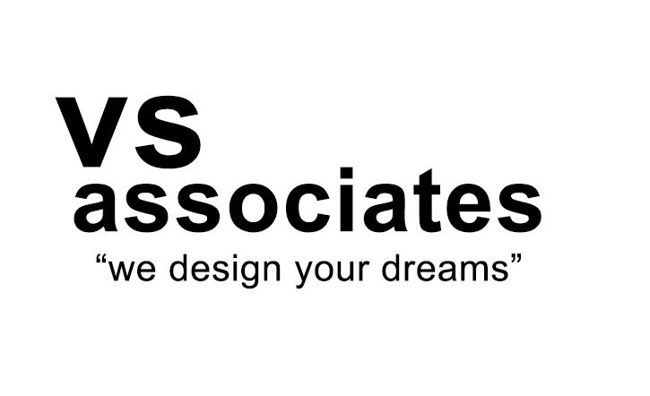
V S A S S O C I A T E S
I freelanced with this company, primarily creating 3D elevations and modeling for residential buildings, enhancing visualization and design communication.
P R O J E C T G A L L E R Y

 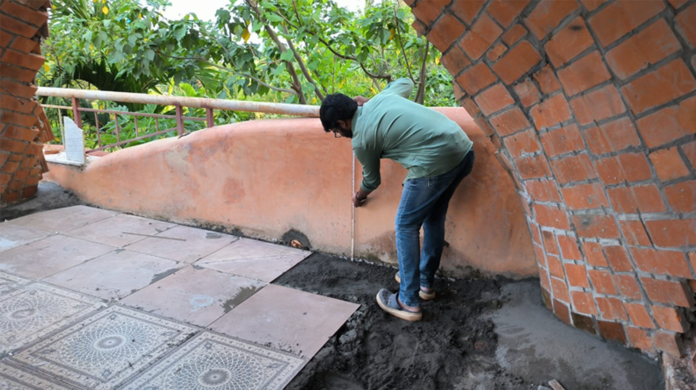
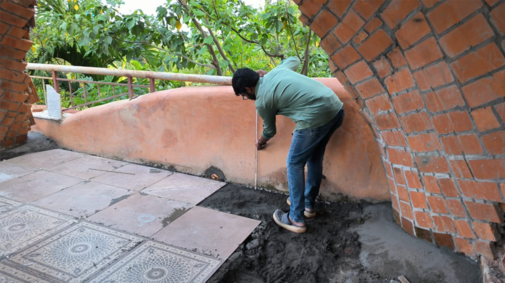
 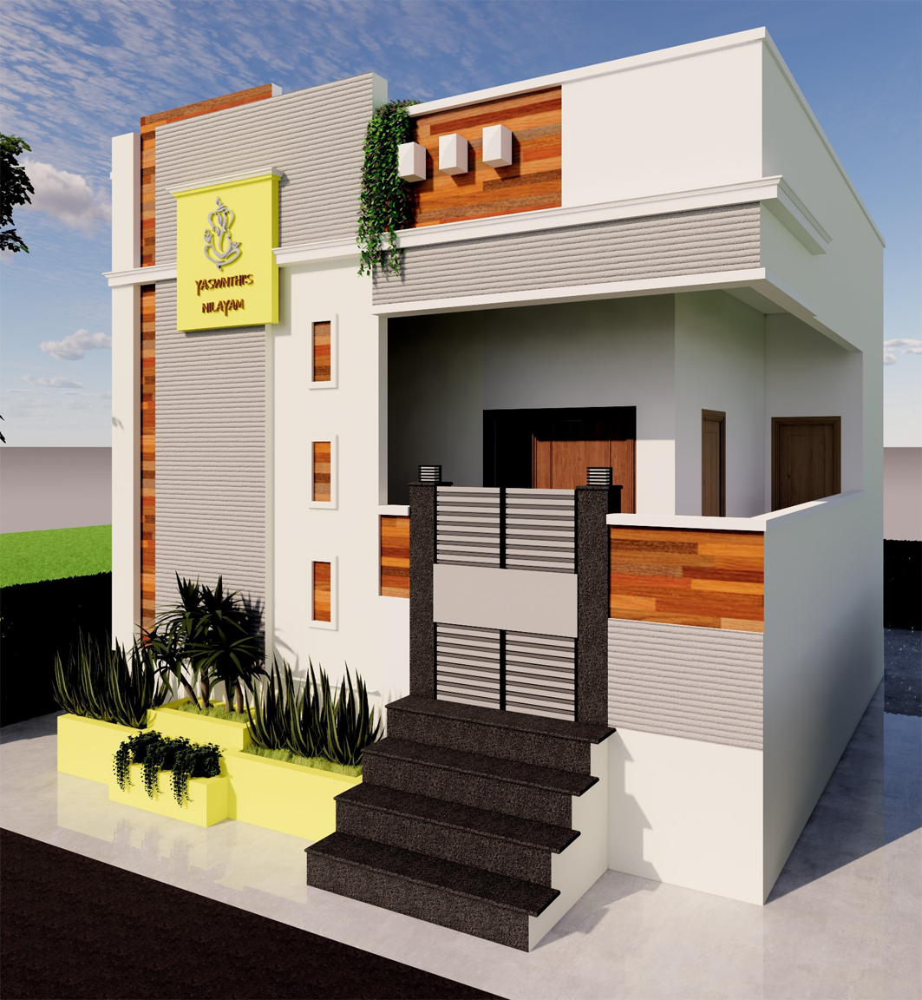
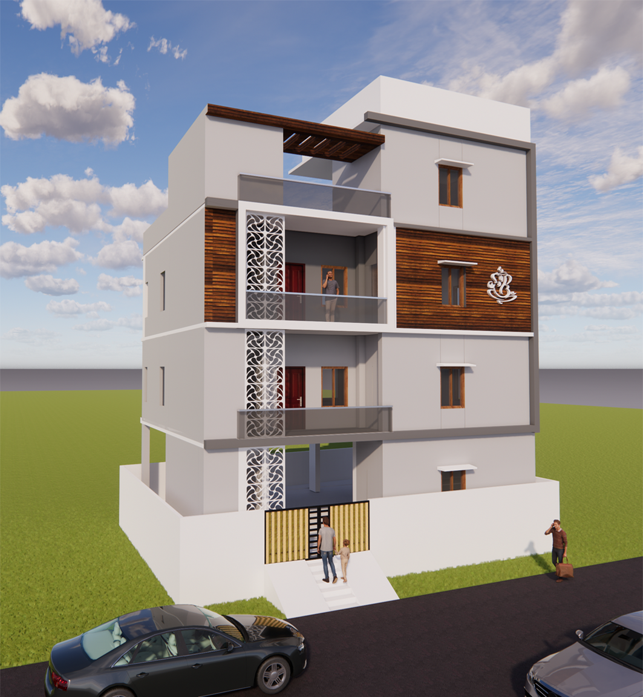
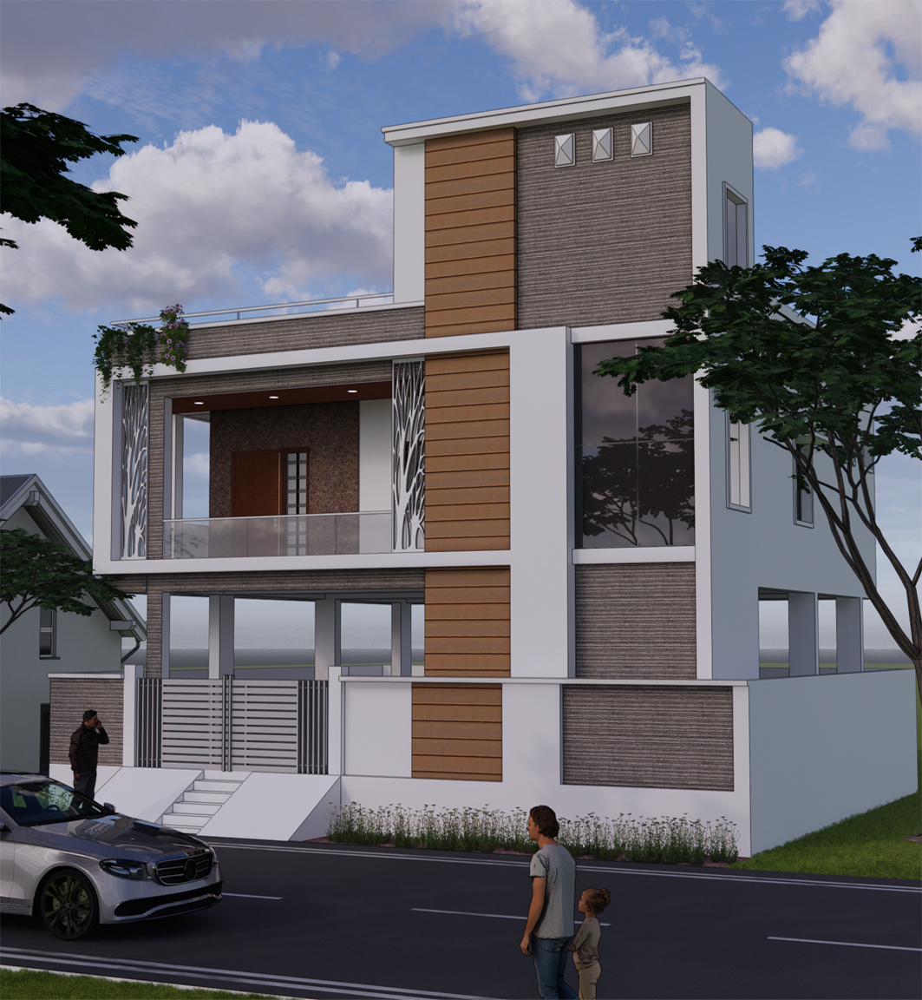
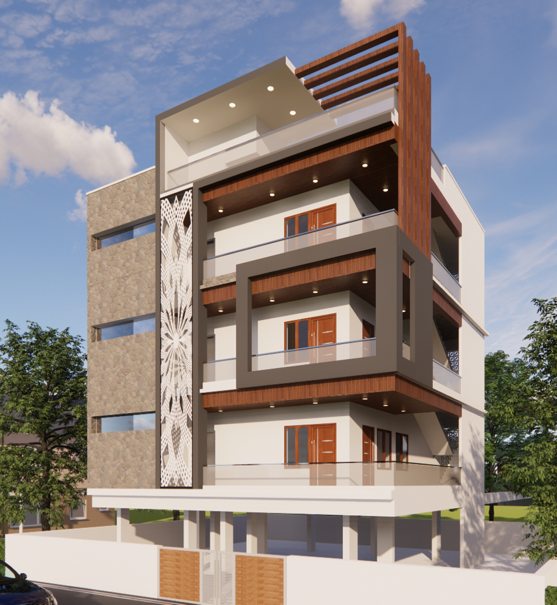
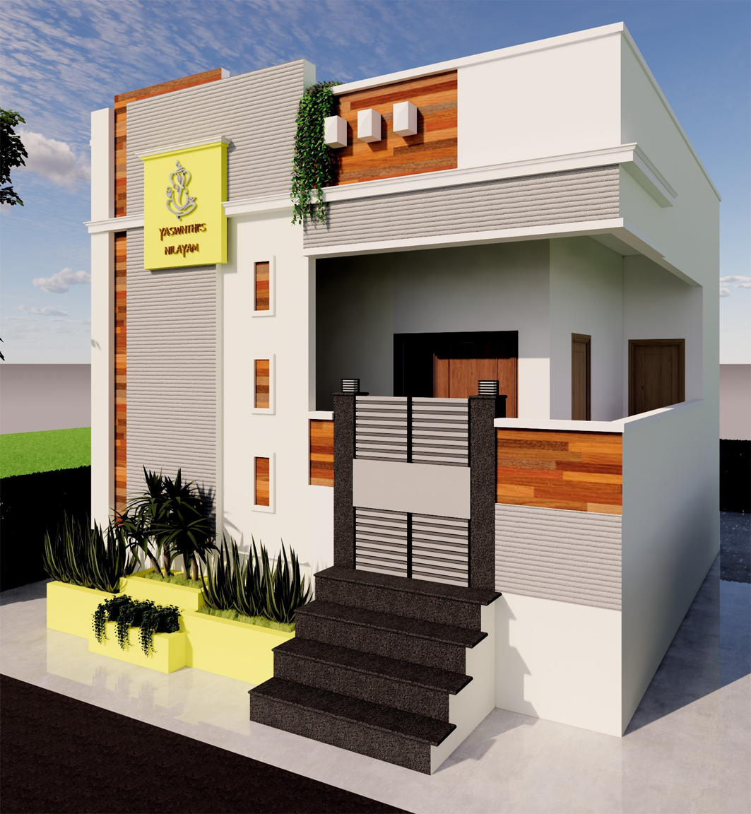
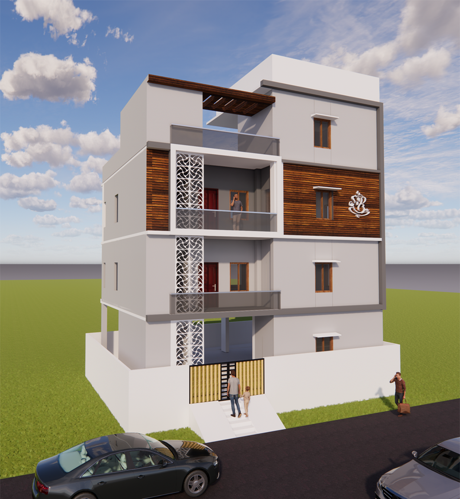
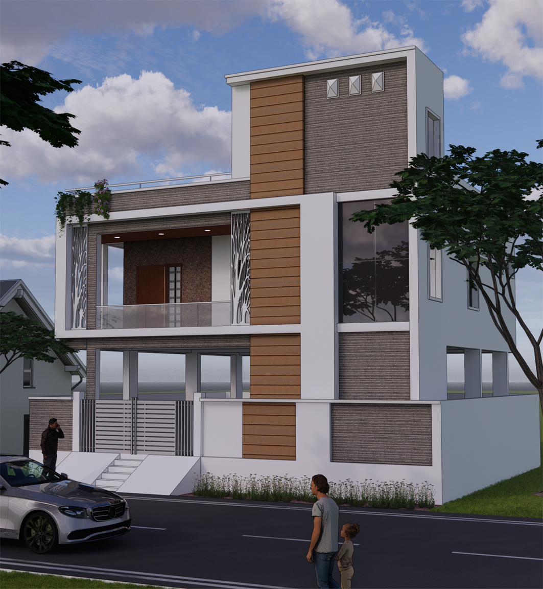
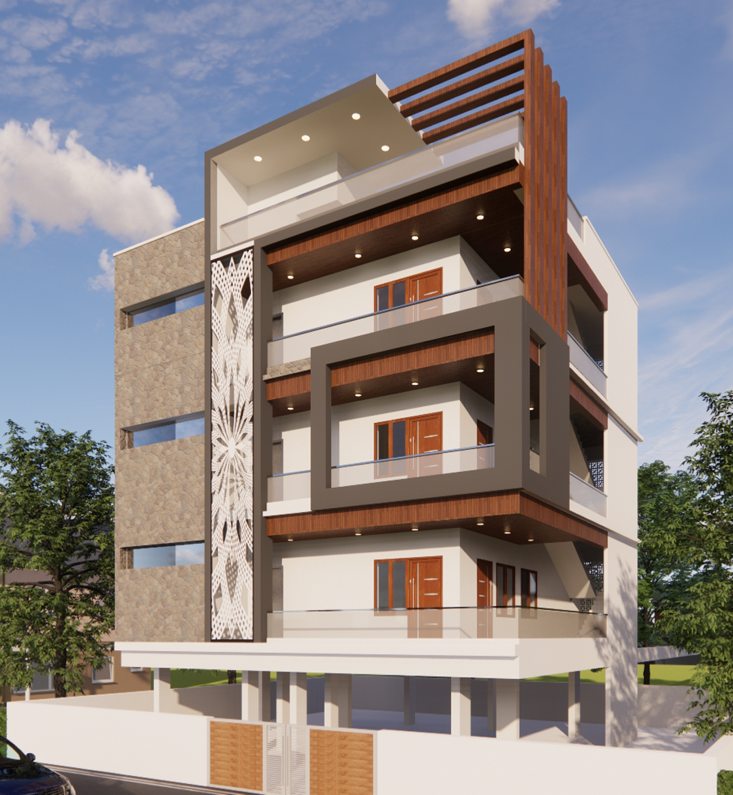